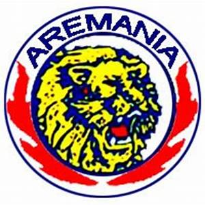
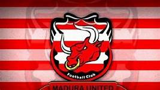

1.Bonek Mania
Istilah Bonek muncul secara tiba-tiba dan besar juga karena media massa yang awalnya bagus yang lambat laun justru mengalami pergeseran pengertian dan akhirnya lebih berkonotasi negatif. Masih ingat gimana dulu Jawa Pos dengan koordinator langsung Cak Dahlan Iskan pernah memberangkatkan ratusan bus, puluhan gerbong KA dan pesawat terbang menuju Jakarta. Tret..tret.. tetttt... begitulah tema yg usung Jawa Pos tahun 1988-an. Dan sebutan populer untuk suporter persebaya waktu itu adalah 'Green Force'. Antusias bukan hanya dari surabaya saja, tetapi juga datang dari kota-kota besar di Jawa Timur. Bahkan dalam suatu kolom di Jawa Pos selama 7 hari berturut2 ada komentar & kesan-kesan dari para peserta Tret tret tett yg tertulis dengan foto para peserta lengkap dengan alamatnya. Begitu antusiasnya jawa pos sampai dalam head line news tertulis "Hijaukan senayan" dan sambuatn masyarakat surabaya dan jawatimur pun luar biasa. Dalam ceritanya ada yg sampai menggadaikan motornya, menjual TV, Tape, perhiasan istrinya dan peralatan rumah tangga lainnya, yg muda2 banyak yg harus mengamen dulu pokoknya harus bisa ke senayan !!.

2. Aremania
Aremania adalah kelompok pendukung (suporter) klub sepak bola Arema FC. Aremania tidak termasuk dalam struktur organisasi PS Arema Malang melainkan berdiri sendiri sebagai simpatisan pendukung Arema. Oleh karena itu Aremania selalu mandiri dalam segala urusan dan pembiayaannya.

3. K-Cong ania
K-Cong Mania adalah supporter yang berdomisili di pulau madura. mereka memakai merah putih loreng-loreng menyesuaikan dengan warna jersey tim kebanggannya. K-Cong Mania juga merupakan suppor besar di jawa timur karena memiliki jumlah supporter yang sanggat banyak sekali, mereka menjuluki dirinyanya dengan istilah sapeh perah.
